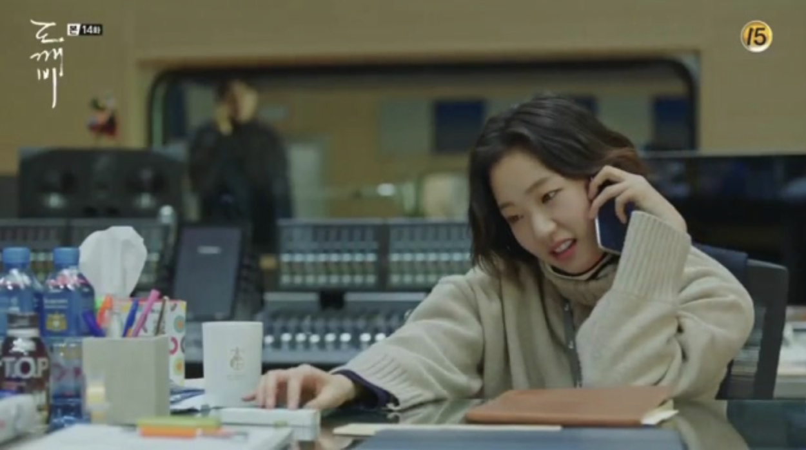
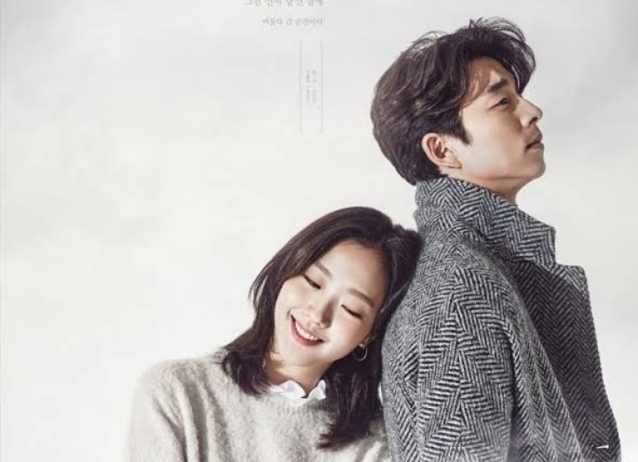
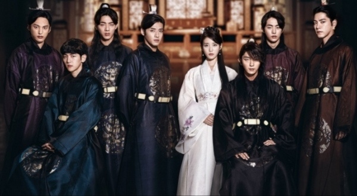
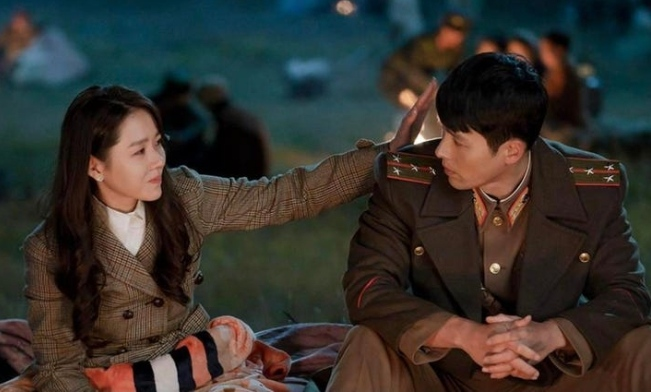

Would you call yourself the "best k-drama fanatic"?
Do you love K-dramas as much as Ji Eun Tak loves radio production?
It's hardly surprising that K-dramas have become incredibly popular due to their realistic,
hilarious, and fantastic writing. K-dramas are renowned for their excellent acting, compelling
plots, and high production values that assist to create an emotional connection between the
characters and the audience.
K-dramas have great appeal to all age groups and people of many nations, particularly those that
are more socially conservative. The unique techniques of storytelling that K-dramas use to
address social challenges, individual struggles, and universal themes like family, friendship,
and love creates insightful content that connects with audiences throughout the world.
Simply said, K-dramas help us feel less alone and frequently succeed in capturing our common
human experiences and emotions.
It's time to test yourself and your passion for these k-dramas with these elaborate quizzes.



All copyright of images used in this project goes to its respective owners.